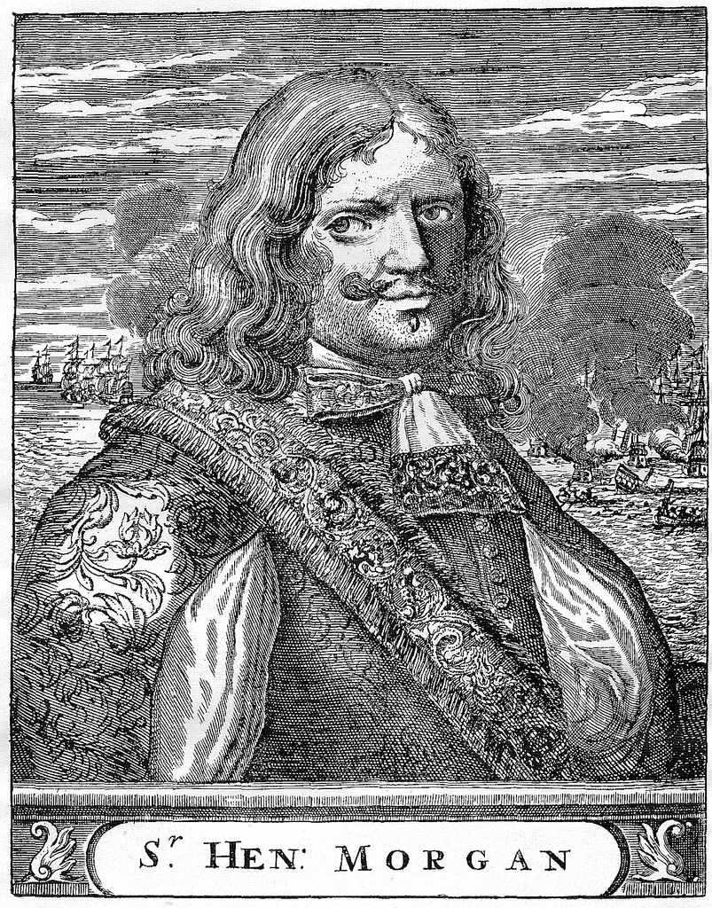

Pirates
Perhaps the best-known pirate of the buccaneering era, Henry Morgan once purportedly ordered his men to lock the inhabitants of Puerto Príncipe, Cuba, inside a church so that they could plunder the town unhindered. He then moved on to capture Porto Bello, Panama, in part by creating a human shield out of priests, women and the mayor. Over the next few years, other brutal raids followed against two towns in Venezuela and Panama City. Though Morgan was briefly arrested in 1672, he ended up serving as acting governor of Jamaica in 1678 and again from 1680 to 1682. Ironically, the Jamaican legislature passed an anti-piracy law during his administration, and Morgan even assisted in pirate prosecution.

Henry Morgan